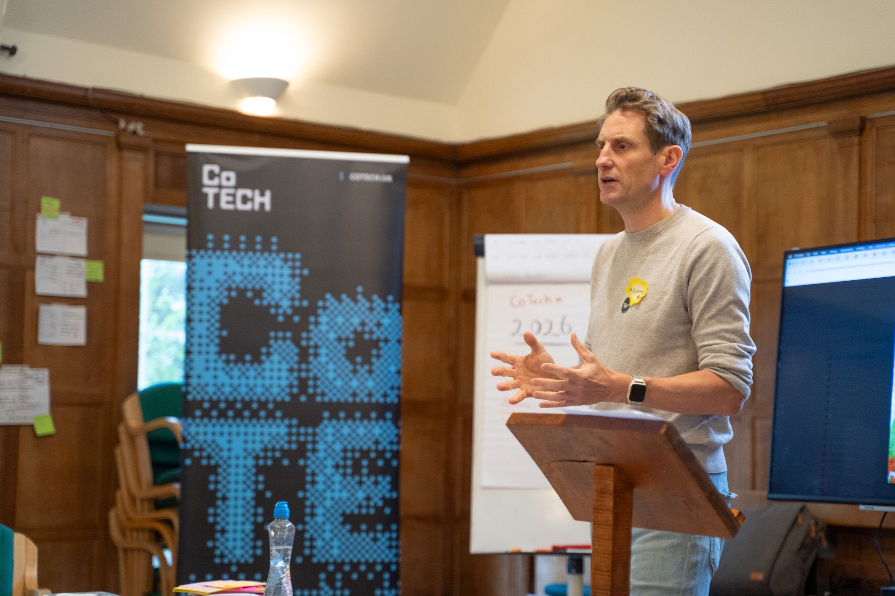

Sovereign tech, cooperative future.
Thursday 17th September 2026 · SPACE4 · 9:30am - 4:30pm + drinks

Who builds AI, who controls it, and how do communities take their seat at the table?
CoTech is bringing its network together for a day of honest conversation, genuine connection, and some big questions about the technology we're all living with.
This year's theme is AI. Not the hype, not the sales pitch, but the real debate. Is ethical AI actually possible? And what does it mean for the kind of human-centred, ecologically-sustainable work we do?
We're kicking things off with a panel of expert speakers, then opening the floor. The afternoon is yours: unconference sessions shaped by the people in the room, lightning talks, and the kind of conversations that don't happen at corporate conferences.
Come ready to think, disagree, and leave with something useful.
Giuseppe is helping HMRC set up its AI initiatives, specifically focussing on "good AI", assurance, and value creation. He previously led DWP's national-scale data products and services, and he was Deputy Director of the NHS AI Lab, the first public sector R&D AI initiative.
OpenUK CEO, Professor Amanda Brock has grown it into a leading open source organisation and think tank. A lawyer with 25 year's experience across tech, she helped shape internet law in the 2000's and today's AI and open source law and policy at an international level. Amanda is a sought-after international keynote speaker and has written extensively on tech. She's the editor of Open Source Law, Policy and Practice, the seminal text in this space. Amanda's held many commercial, not for profit and public sector advisory and NXD roles. OpenUK's State of Open Con is one of open source's leading conferences.
| 9:30-10:00 | Arrivals |
| 10:00-10:15 | CoTech introduction |
| 10:15-11:00 | Panel discussion on AI |
| 11:00-11:30 | Break |
| 11:30-12:30 | Facilitated group discussions |
| 12:30-13:00 | Unconference planning |
| 15:00-15:30 | Break |
| 15:30-16:30 | Unconference sessions |
CoTech members and anyone who cares about tech that serves people not profit. If you work in digital around co-ops, charities and the public sector, and you're curious about where cooperative technology is heading, this is for you.